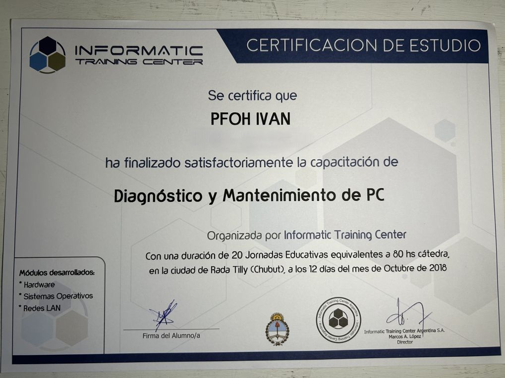
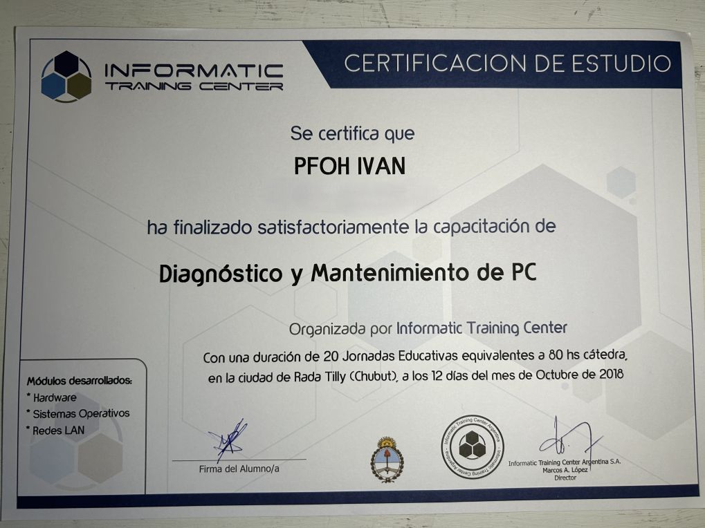
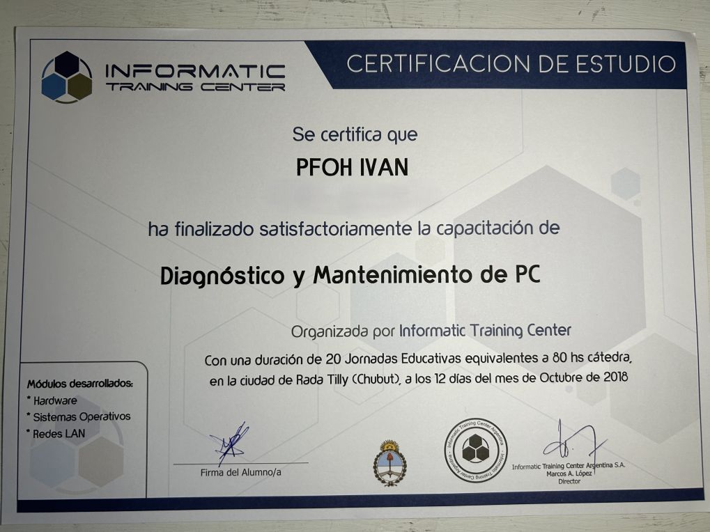

Pfoh Hardware
Diagnóstico • Mantenimiento • Upgrades
Quién está detrás
PfohHardware es el emprendimiento profesional de soporte técnico liderado por Iván Pfoh. Estudiante avanzado de la Tecnicatura en Análisis de Sistemas. Experiencia en diagnóstico, mantenimiento fisico de computadoras, reinstalación de sistemas, actualización y reparación de componentes. Trabajo con clientes particulares y pequeñas empresas ofreciendo soluciones claras, documentadas y con garantía de trabajo.
- Rapidez en respuestas y presupuesto transparente.
- Reportes y pruebas entregables.
- Servicio técnico orientado a resultados y continuidad operativa para empresas.
Certificaciones

 

Fundamentos de ciberseguridad — Google (2025) · Fundamentos de soporte técnico — Google (2025) · Diagnostico y manenimiento de hardware — Informatic Training Center (2018)
